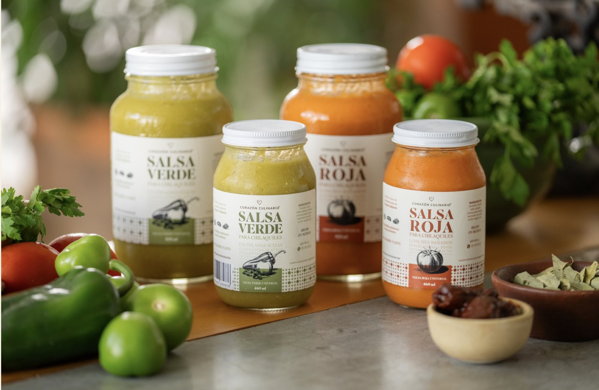
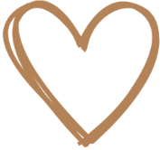
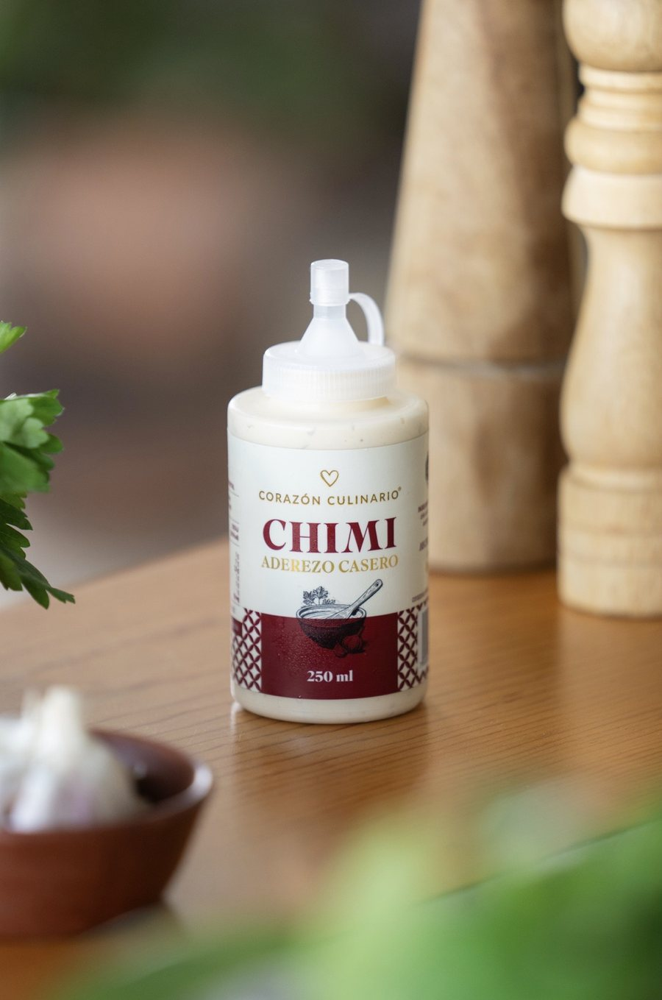
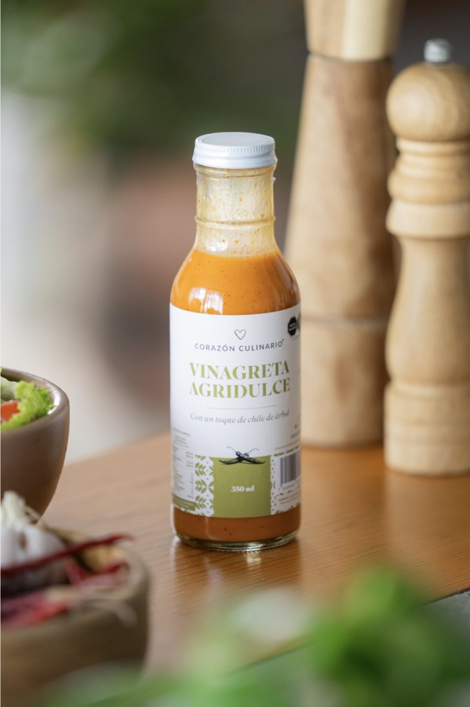
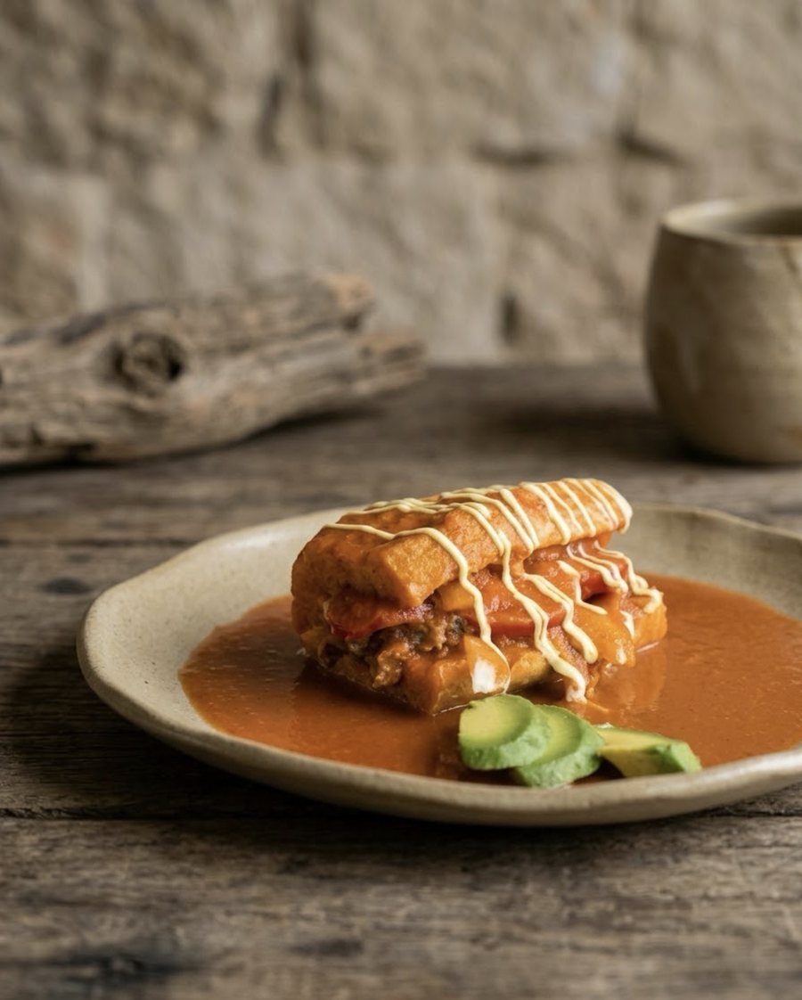

Una familia
amante del buen comer
Somos una empresa familiar de Guadalajara. Creamos salsas y aderezos que vuelven lo simple exquisito.


“Nuestro objetivo es facilitar la vida en la cocina, tanto para quienes disfrutan cocinar como para quienes buscan algo práctico.”

Todo comienza
con el Chimi
Nuestro aderezo estrella, destacado por su gran sabor y versatilidad. Ideal para comer con carnes, mariscos, ensaladas, hamburguesas, pizza, sándwiches, botanas y más.

La receta de la tía,
siempre la favorita
Cada producto nace en nuestra cocina. El Aderezo 3 Vinagres es la receta de la tía, esa que no puede faltar en ninguna ensalada. Desde ahí seguimos creando: vinagretas, semillas enchiladas y salsas universales para el día a día.
Hecho con el corazón
Hecho en casa
Elaboramos a mano, en tandas pequeñas y con ingredientes reales, como lo haríamos para nuestra propia mesa.
Práctico
Platillos deliciosos en pocos minutos: nuestras salsas te resuelven la comida sin perder el sabor de casa.
Versátil
Con nuestras salsas puedes enriquecer cualquier platillo de manera fácil y deliciosa.

Con el auténtico
sabor de casa
- Chilaquiles
- Lonchecitos bañados
- Huevos rancheros
- Tinga
- Enchiladas suizas
- Pastel azteca
- Taquitos de crema
- Mole de huevo
- Macarrones
- ¡Y más!